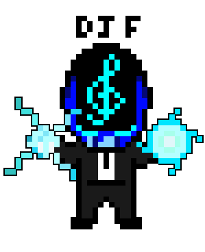
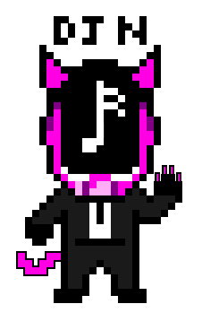
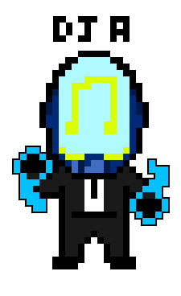
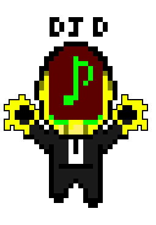

What is Groupie tracker ?
Groupie-tracker is an application where you can search your artist between 52 different artists
The goal of this project was to process data via an API
For this project we was in groups of four


What is your team?
We are students from Paris-Ynov-Campus, who has already work on a project together
Our name was AMAZEING
The goal of this project was to process data via an API



